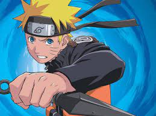
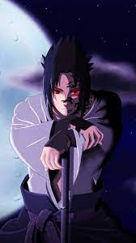
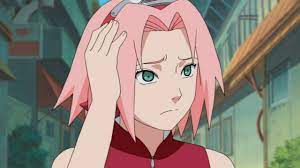
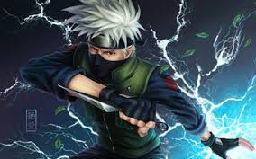
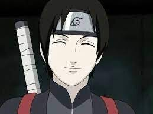
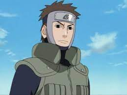
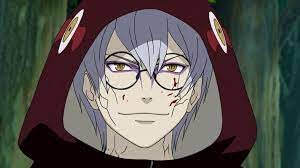

Naruto Uzumaki es un joven ninja de la aldea de la hoja, que trata de buscae a su amigo luego de que se fugase de su aldea, pero para llegar a el tiene que entrenar mas duro y ser ma fuerte.

Sasuke Uchiha tuvo una infancia no muy buena, ya que si hermano mato a su familia y su clan entero, y ahora esta en busca de venganza pero para eso necesita hacerse mas fuerte y mucho mas agil que su hermano Itachi.

Sakura Haruno es una joven ninja que esta enamorada de Sasuke y quiere encontrarlo para quedarse con el y usa a naruto para poder encontrarlo, mientras le lastima los sentimientos.

Kakashi sensei del equipo 7 es un buen ninja que lo unico que busca es el bien por los demas y protegerlos,y leer los libros de Yiraiya.

Sai en un mimbro anbu inflitrado en la aldea de la hoja que luego de un tiempo siendo miembto del equipo 7 se encariña con ellos, pero no lo puede mostrar ni abandonar anbu porque sino muere por el pacto que hizo con el lider.

Miembro anbu que se quedo en la aldea de la hoja leugo de mucho tiempo y ahora es el ayudante de kakashi en el equipo 7 y por sierto a veces da miedo.

Miembro de la aldea del sonido que se inflitra en la aldea de la hoja para poder ayudar a su maesto Orochimaru a mata al hokage de ese momento, al que luego le termina robando gran parte del chakra y poder.